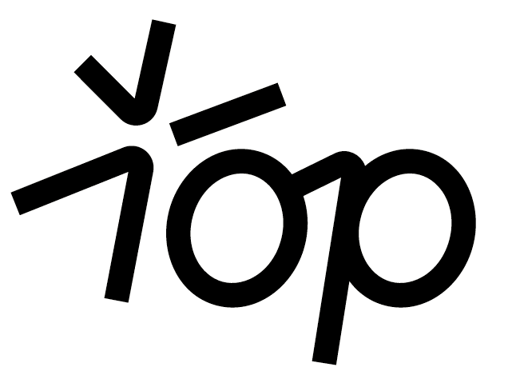

Продюсерский центр · Продукт-трендодиночество, нет отношений — 25 витрин заявляют, 2 продукта, 3 983 запросов в месяц; развод, расставание — 23 витрин заявляют, 3 продукта, 21 928 запросов в месяц; горе, потеря — 11 витрин заявляют, 2 продукта, 7 930 запросов в месяц; границы, токсичное окружение — 36 витрин заявляют, 9 продуктов, 13 641 запросов в месяц. Это места, где можно занять позицию, а не конкурировать.
Поиск по психологии ниже прошлогоднего почти по всем болям (0.61–1.48). Растут: страх будущего 1.48× (1 612/мес); деньги, самореализация 1.09× (17 232/мес, полка занята); нет знаний, нужна система 1.07× (33 492/мес, полка занята). Развод не растёт как боль (0.87×), но внутри него спрос перетекает с «пережить» (0.73×) на «жизнь после» (1.04×) — и позиция «после» свободна.
349 523 запросов в месяц, в 16 раз больше развода, но за год 0.73× и 27 готовых продуктов у 77 витрин. Входить сюда — конкурировать, а не занимать место.
22% витрин вообще не называют, для кого продукт, медиана — один сегмент. Регалии поднимают цену входа: 4 995 ₽ против 2 500 ₽ без них. Живой вебинар как магнит откликается в 5.06× против гайда 1.21×.
| Боль · что это значит | Заявляют витрин | Продуктов | Разрыв | Запросов/мес | Год к году | Динамика 24 мес | Отклик на магнит | Лифт в Радаре |
|---|---|---|---|---|---|---|---|---|
| Страх будущего 🟢 спрос растёт, полка занята | 18 | 9 | 2.0 | 1 612 | 1.48× | — | — | |
| Деньги, самореализация 🔴 полка переполнена | 46 | 62 | 0.7 | 17 232 | 1.09× | — | — | |
| Нет знаний, нужна система 🔴 полка переполнена | 9 | 34 | 0.3 | 33 492 | 1.07× | — | — | |
| Одиночество, нет отношений 🟡 полка пустая, спрос ровный | 25 | 2 | 12.5 | 3 983 | 0.96× | 1.68× | — | |
| Развод, расставание 🟡 полка пустая, но спрос падает | 23 | 3 | 7.7 | 21 928 | 0.87× | 1.68× | 1.69× | |
| Горе, потеря 🟡 полка пустая, но спрос падает | 11 | 2 | 5.5 | 7 930 | 0.87× | — | — | |
| Границы, токсичное окружение 🟡 контент летит, продукта почти нет | 36 | 9 | 4.0 | 13 641 | 0.84× | 1.39× | 2.79× | |
| Зависимость, созависимость 🟡 полка пустая, но спрос падает | 28 | 5 | 5.6 | 4 866 | 0.81× | — | 1.15× | |
| Детско-родительские 🔴 полка переполнена, спрос падает | 32 | 115 | 0.3 | 14 288 | 0.81× | — | 1.21× | |
| Выгорание, усталость 🟡 полка пустая, но спрос падает | 50 | 14 | 3.6 | 2 714 | 0.8× | — | — | |
| Родительская семья, травма ⬜ полка соразмерна заявкам | 24 | 23 | 1.0 | 10 560 | 0.78× | 1.6× | 2.79× | |
| Депрессия, апатия 🟡 полка пустая, но спрос падает | 41 | 3 | 13.7 | 12 040 | 0.75× | — | — | |
| Деньги в профессии 🔴 полка переполнена, спрос падает | 7 | 53 | 0.1 | 7 601 | 0.75× | — | — | |
| Тревога, паника ⬜ спрос самый большой, но падает, полка полна | 77 | 27 | 2.9 | 349 523 | 0.73× | 3.32× | — | |
| Прокрастинация, нет мотивации 🟡 полка пустая, но спрос падает | 20 | 6 | 3.3 | 1 475 | 0.72× | — | — | |
| Отношения с партнёром ⬜ фон: самая занятая полка ниши | 84 | 81 | 1.0 | 84 384 | 0.71× | 1.68× | 2.58× | |
| Самооценка, неуверенность ⬜ фон | 87 | 55 | 1.6 | 14 841 | 0.69× | 1.62× | — | |
| Психосоматика, тело 🔴 полка переполнена, спрос падает | 43 | 76 | 0.6 | 13 945 | 0.64× | — | — | |
| Бытовые войны ⬜ фон | 1 | 0 | 1.0 | 2 111 | 0.61× | — | — |
Витрины и полка по ним сняты, поисковый спрос будет в следующем месячном срезе. Вердикт без спроса не ставим.
| Боль | Заявляют витрин | Продуктов | Разрыв | Заметка |
|---|
Поисковый спрос, 2024-09-01 → 2026-08-31
· боль заявляют 23 витрины, а продукт под неё есть у 3 (990, 990 ₽) — среднего чека в теме нет
· в Радаре тема залетает в 1.69 раза чаще фона
· боль в целом не растёт (0.87× за год), но внутри неё люди уходят от «как пережить» (0.73×) к «жизнь после» (1.04×), а позицию «после» рынок не занял: её держат 4 витрины из 23 заявивших боль, «сохранить брак» — 1, у остальных позиция не заявлена
· под тему уже собран копирайт-паспорт: какими словами, какие доказательства, какой вход
| Тема · примеры | залётов | макс. × | лифт к базе |
|---|---|---|---|
| поколения общество | 18 | ×10.1 | Правое ×2.8 |
| психиатрия диагнозы | 3 | ×37.9 | Ясно ×3.3 · Правое ×2.7 |
| Самооценка, неуверенность | 3 | ×24.4 | Ясно ×2.8 |
| Отношения с партнёром | 3 | ×3.3 | Ясно ×0.9 · Правое ×0.4 |
| Детско-родительские | 2 | ×9.0 | Ясно ×3.3 · Правое ×2.7 |
| Тревога, паника | 1 | ×4.3 | Ясно ×1.1 |
| стыд вина | 1 | ×3.5 | Ясно ×6.6 |
| Границы, токсичное окружение | 1 | ×3.5 | Правое ×0.8 |
👤 — выпуск с приглашённой звездой, эффект персоны смешан с темой. Серым — темы с одним-двумя залётами, это направление, не измерение. Лифт — доля темы среди залётов канала против её доли среди обычных выпусков того же канала.
медиана просмотров · 152 зрелых роликов · залётов ≥3×: 28 · @artforintrovert
«напиши ГАЙД» и «поставь плюс» работают одинаково: в два раза больше комментариев, чем у обычного поста. Это стандарт ниши, 21 аккаунтов.
на уровне обычного поста: шаг в личные сообщения в два раза тяжелее комментария.
живой формат бесплатного материала собирает в четыре раза больше отклика, чем PDF. В нише медицины наоборот: приёмы между нишами не переносятся.
каждый вывод на этой странице стоит на дословной фразе из поста или витрины; пересказы модели выброшены.
| Темы бесплатных материалов | отклик | постов | акк | примеры |
|---|---|---|---|---|
| Женская психология и самореализация | 1.99× | 8 | 7 | ×24.1 · ×4.9 · ×2.2 |
| Отношения и семья | 1.68× | 12 | 9 | ×26.2 · ×2.8 · ×2.6 |
| Личностный рост и саморазвитие | 1.62× | 6 | 6 | ×9.1 · ×2.5 · ×1.7 |
| Самопознание и внутренняя работа | 1.6× | 10 | 7 | ×27.9 · ×6.7 · ×3.8 |
| Практическая психология и инструменты | 1.32× | 12 | 10 | ×10.0 · ×8.1 · ×5.3 |
| Психическое здоровье и благополучие * | 3.32× | 4 | 3 | ×5.4 · ×4.2 · ×2.5 |
| Абьюз, манипуляции и границы * | 1.39× | 3 | 3 | ×5.0 · ×1.4 · ×0.0 |
| Разное и профессиональное * | 1.25× | 1 | 1 | ×1.2 |
| Форматы бесплатных материалов | отклик | постов | акк | примеры |
|---|---|---|---|---|
| вебинар, эфир | 5.06× | 5 | 4 | ×24.1 · ×8.1 · ×2.6 |
| медитация, практика | 2.65× | 13 | 7 | ×10.0 · ×5.4 · ×5.0 |
| разбор, диагностика | 1.38× | 16 | 8 | ×27.9 · ×9.1 · ×2.6 |
| гайд PDF | 1.21× | 6 | 6 | ×4.9 · ×2.8 · ×1.3 |
| подкаст, аудио * | 15.18× | 2 | 2 | ×26.2 · ×4.2 |
| подборка, список * | 10.28× | 1 | 1 | ×10.3 |
| прогноз, расчёт * | 3.9× | 4 | 3 | ×7.1 · ×6.7 · ×0.7 |
| полная версия видео * | 3.04× | 2 | 2 | ×3.8 · ×2.3 |
| доступ в канал или чат * | 2.47× | 3 | 3 | ×2.5 · ×2.5 · ×1.7 |
| бесплатная консультация * | 1.79× | 2 | 2 | ×2.0 · ×1.6 |
| практикум, марафон * | 1.68× | 3 | 3 | ×5.3 · ×1.7 · ×0.0 |
| тест * | 1.39× | 1 | 1 | ×1.4 |
| другое * | 0.83× | 2 | 2 | ×1.2 · ×0.4 |
* один-два аккаунта — направление, не измерение; такие строки внизу и серым
витрин называют виновника, и почти всегда это внутреннее устройство человека: критик, установки, сценарии. Внешнего врага ниша не назначает.
витрин ставят срок или ограничение мест. Страхом давят 7%, виной и стыдом 9%: ниша продаёт мягко.
витрин вообще без адресата, медиана — 1 сегмент. «Для кого» — самое слабое место упаковки в нише.
медиана входа с регалиями против входа без них (60 и 21 витрин с ценой в рублях). У психологов регалии поднимают цену, у врачей наоборот.
Цена числом есть у 64 из 242 содержательных витрин (26%).
Витрины без цены прячут её не случайно: цена называется в переписке, и сам чат — часть продажи. Это ограничение всех ценовых выводов ниже.
| адресат витрины | витрин | с ценой | медиана входа | мин | макс |
|---|---|---|---|---|---|
| клиентам | 142 | 40 | 4 000 ₽ | 500 | 175 000 |
| специалистам | 43 | 13 | 7 000 ₽ | 1 200 | 252 000 |
| смешанно | 47 | 11 | 7 000 ₽ | 3 000 | 18 000 |
| неясно | 10 | 0 | — | — | — |
Учат профессии (готовят психологов, коучей, расстановщиков): 33 витрин (13%). Обещают документ ДПО или гособразца: 18.
Медиана входа: обучение профессии 17 900 ₽ работа с клиентом 5 000 ₽.
Медиана входа здесь — по витринам (самая дешёвая позиция витрины), в таблице типов ниже — по продуктам. Поэтому «обучение профессии» даёт 17 900 ₽ как вход на витрину и 9 788 ₽ как медиану продукта.
Всего продуктов на витринах: 606.
| тип | продуктов | с ценой | медиана | мин | макс |
|---|---|---|---|---|---|
| консультация | 114 | 41 | 6 000 | 2 000 | 50 000 |
| курс | 111 | 16 | 25 000 | 550 | 100 000 |
| терапия, пакеты сессий | 80 | 38 | 20 000 | 500 | 175 000 |
| обучение профессии | 46 | 22 | 9 788 | 500 | 200 000 |
| вебинар | 36 | 5 | 3 000 | 599 | 15 000 |
| супервизия | 34 | 2 | — | — | — |
| диагностика | 31 | 6 | 5 555 | 1 000 | 9 900 |
| интенсив | 30 | 11 | 6 500 | 600 | 29 000 |
| клуб | 23 | 7 | 5 600 | 2 800 | 60 000 |
| игра | 20 | 2 | — | — | — |
| гайд | 15 | 5 | 1 290 | 799 | 2 000 |
| книга | 13 | 7 | 1 900 | 1 250 | 9 300 |
| B2B, для компаний | 9 | 2 | — | — | — |
| группа | 8 | 5 | 3 000 | 2 000 | 45 000 |
| физический товар | 6 | 6 | 7 695 | 500 | 17 000 |
| наставничество | 6 | 2 | — | — | — |
| ретрит | 6 | 4 | 4 000 | 1 150 | 12 000 |
| подписка | 4 | 3 | 3 990 | 559 | 4 000 |
| мероприятие | 3 | 1 | — | — | — |
| тренировка | 3 | 0 | — | — | — |
| семинар | 3 | 0 | — | — | — |
| марафон | 2 | 0 | — | — | — |
| практика | 2 | 1 | — | — | — |
| иное | 1 | 0 | — | — | — |
Медиана показана только для типов с тремя и больше ценами.
| признак | витрин | доля |
|---|---|---|
| бесплатный вход | 105 | 43% |
| есть лид-магнит | 88 | 36% |
| виден апселл | 33 | 13% |
| есть сопровождение | 61 | 25% |
| предлагают рассрочку | 11 | 4% |
Одна позиция на витрине — у 86 витрин, три и больше — у 79. Витрина с одной позицией лестницы не имеет: клиенту некуда шагнуть, кроме как купить сразу главное.
отношения (85), деньги (55), тревога (52), самооценка (50), травма (47), выгорание (40), супервизия (34), детско-родительское (19), депрессия (18), бизнес (18), сексология (17), психосоматика (16), предназначение (13), мышление (13), стресс (13), созависимость (10), страхи (9), панические атаки (9), кризис (9), цели (9), коучинг (8), карьера (8), границы (8), самореализация (7), эмоции (7)
| ₽ | тип | продукт | аккаунт |
|---|---|---|---|
| 500 | терапия, пакеты сессий | Терапевтическая группа по работе с психологической травмой «Начинай жить!» | @provocator_deniseva |
| 500 | обучение профессии | Обучающий курс «Исцеление души. Психология созависимости и травмы отвержения» | @provocator_deniseva |
| 550 | курс | Авторская программа «ProДеньги. Как детское прошлое мешает вашему настоящему» | @provocator_deniseva |
| 559 | подписка | Видеолекции по подписке | @neformat_clinic |
| 599 | вебинар | Мастер-класс «Быть на своей стороне» | @annamakogonova |
| 600 | интенсив | 2-дневный семинар-практикум «Взрослые дети алкоголиков (ВДА)» | @provocator_deniseva |
| 700 | обучение профессии | Авторский практический обучающий курс «Провокативный метод» | @provocator_deniseva |
| 799 | гайд | Гайд «Выяви свой психотип» | @anna_angelcity_psy |
| 870 | терапия, пакеты сессий | Пакет коучинга из 6 сессий | @ellinadaily |
| 990 | интенсив | Практикум «Синдром отложенного старта» | @makarova_natalia__ |
| 999 | гайд | Рабочая тетрадь | @tasya_prohelp |
| 1 000 | обучение профессии | Психологическая помощь клиентам с расстройствами личности и психическими расстройствами | @psycholog_belostotskaia |
| 1 000 | диагностика | Диагностическая сессия | @subbotina.kat |
| 1 150 | ретрит | Терапевтическая группа «Шабаш на краю Земли» в Португалии | @titarenkoelena.psi |
| 1 200 | супервизия | Супервизионная группа (рекомендованный контакт Кристины Елизаровой) | @imaeva_pro |
| 1 260 | терапия, пакеты сессий | Пакет коучинга из 9 сессий | @ellinadaily |
| 1 500 | диагностика | Индивидуальная карта темперамента (PDF) | @annamillspsy |
| 1 620 | терапия, пакеты сессий | Пакет коучинга из 12 сессий | @ellinadaily |
| 1 640 | курс | Экспресс разбор для психологов | @daria.udilova |
| 2 000 | группа | Терапевтическая группа «Решайся» | @anna_angelcity_psy |
| 2 000 | группа | Онлайн-группа психологической поддержки «Тело как ресурс» | @anna_angelcity_psy |
| 2 000 | практика | Кодинг-медитация против стресса и тревоги | @crvena.valkira |
| 2 000 | гайд | Учебно-практическое пособие «Структура гештальт-сессии: Контакт. Контракт. Фигура. Завершение» | @liber.masha |
| 2 000 | гайд | Учебно-практическое пособие «Шпаргалка: Механизмы прерывания контакта в гештальт-терапии» | @liber.masha |
| 2 000 | консультация | Индивидуальная консультация | @subbotina.kat |
| 2 800 | клуб | Книжный клуб (Тариф 1: «В окружении своих») | @busel_bookclub |
| 2 900 | клуб | AGORA CLUB — Подписка на 1 месяц | @psiholog_rimma |
| 3 000 | консультация | Первая консультация | @anna_angelcity_psy |
| 3 000 | группа | Рефлексивная группа «Времена года» | @elizarova.kris |
| 3 000 | вебинар | Вебинар "ПРО ОТНОШЕНИЯ" | @nastya_ertukhanova |
Из списка убраны сувениры, детские книги и товары не по психологии.
| Аккаунт | окон продаж | Продукты |
|---|---|---|
| @smit.rasulov | 18 | курс «Говори и Убеждай» ×5 · курс «Грамотная речь-уверенный ребенок» ×2 · Курс ×2 |
| @amir.zhantassov | 13 | трансформационный тренинг «ПЕРЕЗАГРУЗКА» ×12 · тренинг «ПЕРЕЗАГРУЗКА» |
| @deminaofficial_ | 9 | Счастливая в отношениях ×7 · курс «Счастливая в отношениях» · платная программа |
| @katya_kamasutra | 6 | онлайн ×2 · онлайн курс · курс |
| @love_enot | 5 | ретрит ×2 · Ретрит · Летний ретрит |
| @sexology.vasilenko | 5 | закрытый женский круг ×2 · эфир в рамках Закрытого женского круга · практикум «Оргазм женщины» |
| @jeniashtefan | 4 | Курс «Про Любовь» и групповое наставничество · программа «Про Любовь» и групповое сопровожде · личное и групповое сопровождение «Выдам замуж |
| @nemkova.evgeniya | 4 | 4-модульная переподготовка на психолога · Новогодняя Ярмарка обучающих боксов · переподготовка на психолога и коучинг |
Никто не перезапускает убыточное: повтор запуска значит, что продукт окупился, а номер потока — сколько раз. Окно продаж читается из подписей: «старт потока», «набор открыт», «поток №». В таблице только психологи объединённой панели с русскоязычным контентом — 89 окон у 24 аккаунтов; ещё 51 аккаунтов с запусками остались за рамкой: другие ниши и языки. Второй сигнал денег — рейтинг ГетКурса: 89 записей по психологии с 2023 года.